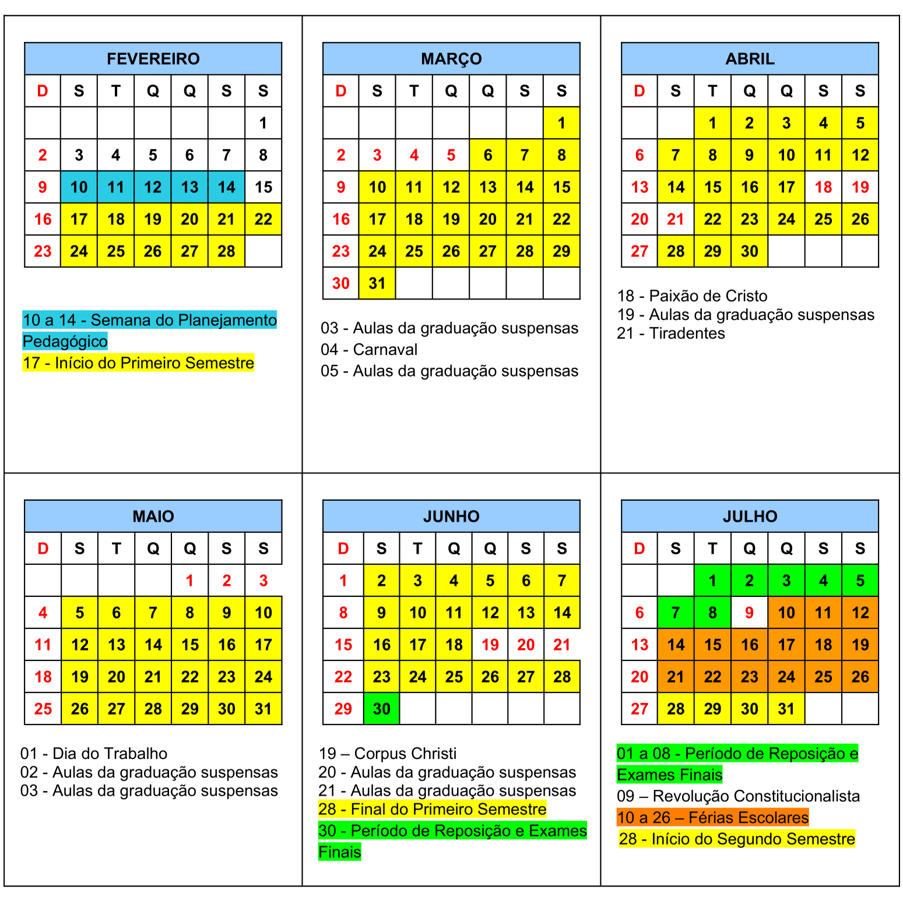
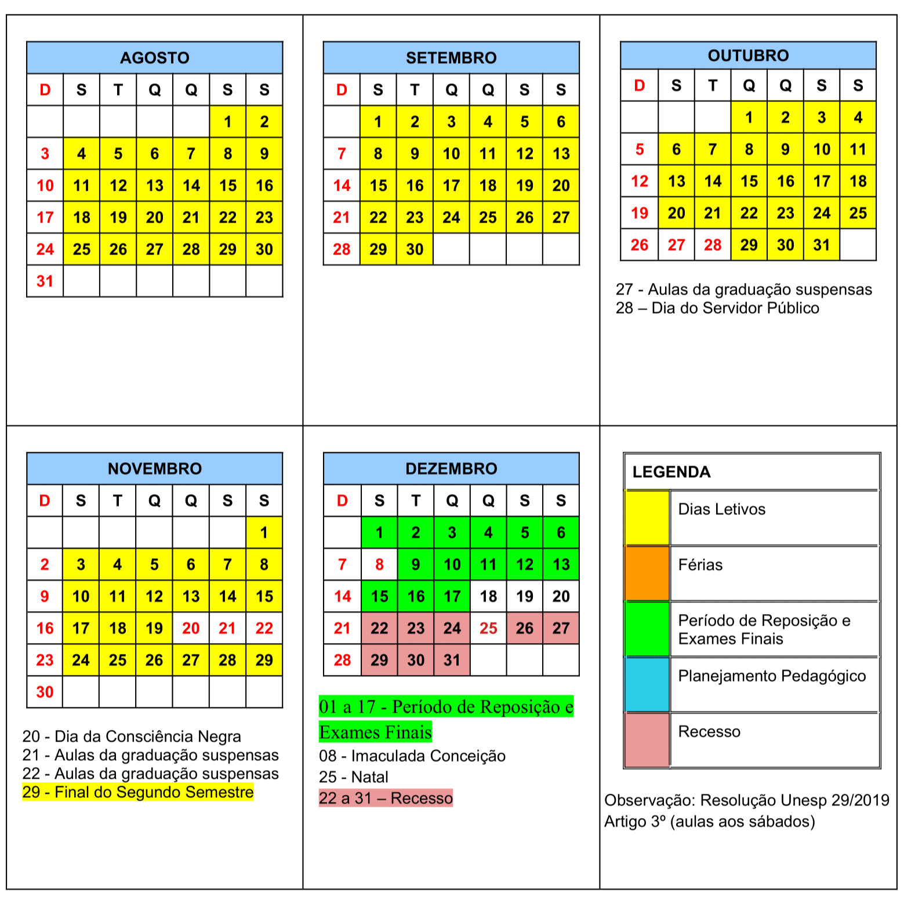
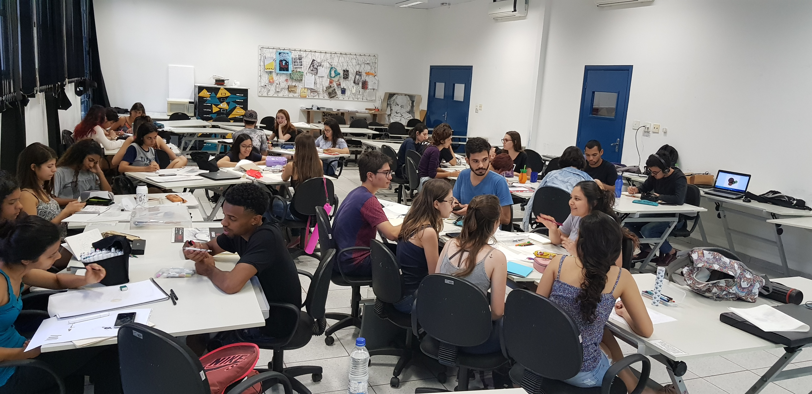

Boas vindas, calouros!
Estamos felizes em recebê-los em nossa universidade. Nós, da turma XXII (segundo ano), montamos esta página para reunir os principais links de maneira mais acessível, principalmente para aqueles que ainda não adicionamos no grupo. Recomendamos que vocês também deem uma explorada no site oficial da FCT Unesp. Qualquer questão, entre em contato com a gente, estamos à sua disposição!
Você também pode enviar um e-mail diretamente para o desenvolvedor da página em caso de dúvidas ou sugestões.
Grade horária e calendário de 2025
Consulte a grade horária de 2025 clicando aqui
 Mapa
Faça o download do mapa oficial da FCT Unesp!
Sala do Rato, Casinha (NEPP), Maquetaria e ateliê de Desenho Arquitetônico estão marcados em vermelho abaixo. Expanda o iframe para criar rotas pelo Maps.
Veteranos
Acompanhe os perfis das turmas de Arq&Urb e do Centro Acadêmico de Arquitetura e Urbanismo (CACAU) no Instagram
Regras de bom uso da Sala do Rato
Ateliê de projetos I, mais conhecido como Sala do Rato
Via FCT Unesp: Laboratórios Didáticos
- Não use estilete, cola ou tinta diretamente nas mesas
- Jogue seu lixo fora. Orgânicos no lixo do banheiro.
- Evite comer dentro da sala. Em caso de confraternização, limpe o grosso.
- Descarte ou leve para casa seus trabalhos após a apresentação da atividade
- Ao deixar trabalhos na sala, coloque nome e data para descartarmos ao final do semestre em caso de esquecimento
- Materiais trazidos da Maquetaria devem ser devolvidos ao final do dia ou semestre, consulte o Anderson em caso de dúvidas
- As gavetas vazias do armário podem ser usadas periodicamente, mas não nos responsabilizamos por itens perdidos
- Achou um objeto esquecido? Coloque na caixa de achados e perdidos
- Tranque as portas, deligue as luzes e o ar-condicionado ao ser o último a sair
- Não ande por aí com a chave, devolva-a na guarita primeiro
Colabore com o cuidado do nosso espaço! A responsabilidade também é sua.